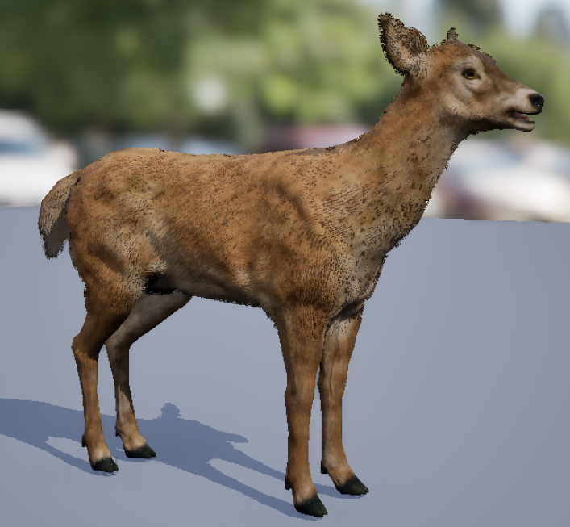
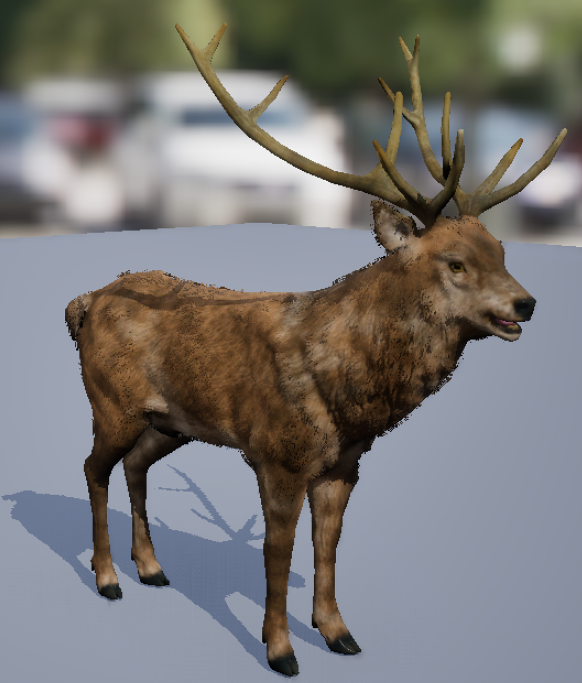
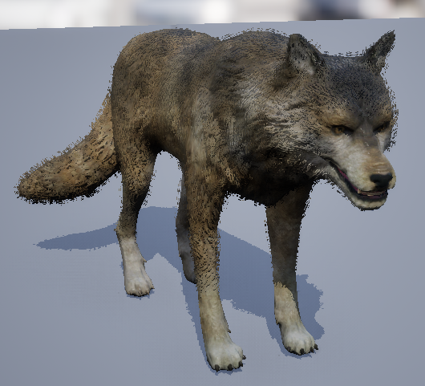
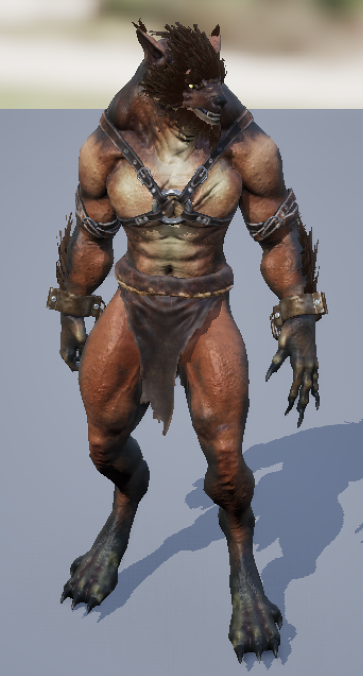
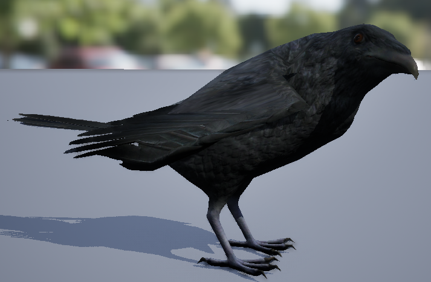

Beštiár
Ľaň

Životy: 50
Slabina: oheň
Body agresie: 5
Návnada: ovocná
Prostriedky: zvieracia srsť
Ľane sa držia pri svojom stáde. Pasú sa, prechádzajú sa alebo sa obzrú okolo seba. Keď sa ľaň pasie, nevidí nič,
čo sa okolo nej deje a musí sa spoliehať len na sluh. Pri prechádzaní vidí pred seba, ak sa však obzerá alebo ju
niečo vystrašilo je v strehu a má prehľad o celom svojom okolí. Pokiaľ ľaň niečo začuje, preruší aktuálnu činnosť
a poobzerá sa. Ak zistí vo svojom okolí nejakú hrozbu, zamečí, aby upozornila ostatných členov stáda a pokúsi sa
utiecť. Pokiaľ ľaň nič neohrozuje a v jej okolí sa nachádza ovocná návnada príde k nej a zožerie ju.
Jeleň

Životy: 80
Slabina: oheň
Body agresie: 5
Návnada: ovocná
Prostriedky: zvieracia srsť
Správanie jeleňov je vo väčšine vecí zhodné s ľaňami. Rozdiel je v reakcii na hrozbu. Pokiaľ je hrozba dostatočne
ďaleko, rovnako ako ľaň aj jeleň rykom informuje ostatné blízké lane a jelene a pokúsi sa utiecť. Ak sa však hrozba
bez povšimnutia dostala príliš blízko, po upozornení ostatných, jeleň na hrozbu zaútočí. Vzdialenosť od jeleňa, v
ktorej sa hrozba musí zdržiavať, aby po nej jeleň útočil sa postupne znižuje, čo dáva útočníkovi šancu utiecť. Ak
však útočník jeleňa poraní, vzdialenoť sa opäť predĺži na pôvodnú veľkoť.
Vlk

Životy: 100
Slabina: voda
Body agresie: 3
Návnada: mäsová
Prostriedky: kosť, zvieracia srsť
Vlky žijú vo svorkách. Každá svorka má jedného alfu, ktorý určuje, čo svorka robí. Ak je sforka v pokoji, alfa leží
na zemi a ostatné vlky sa okolo neho prechádzajú. Svorka neútočí a ani nehľadá korisť. Je možné okolo nej prejsť bez
problémov. Svorka v pokoji reaguje len na poranenie jedného z jej členov, kedy okmažite zaútočí na útočníka, alebo
ak spozouje návnadu. Keď sa alfa postaví, je to znak, že svorka začala loviť. Vlky sledujú svoje okolie a hladajú
vhodnú korisť. Ak niektorý vlk niečo zbadá, informuje o tom alfu, ktorý rozhodne, či je to vhodná korisť. Ak môžu
vyberú si hráča. Alfa ohlási začiatok lovu zavytím. Pokiaľ vlky úspešne zabijú svoj cieľ, alebo ho niesú schopní
uloviť do 30 sekúnd, prejdú do pokoja. Vlky reagujú na mäsovú návnadu. Ak ju niektorý vlk zbadá, zavyje. Alfa
mu odpovie a potom vlky prerušia to čo robia, a prídu k návnade. Vlky vidia dosť ďaleko pred seba ale počujú iba
veľmi blízke zvuky.
Vlkolak

Životy: 150
Slabina: ľad
Body agresie: 2
Návnada: -
Prostriedky: zvieracia srsť, kosť
Vlkolak je krátkozraký tvor, ktorý sa spolieha najmä na sluch, ktorý má veľmi dobrý. Ak začuje zvuk tvora, ktorý by
ho mohol ohroziť, pokúsi sa od tohto tvora odísť preč, ak však začuje zvuk možnej koristi, pôjde ho preskúmať.
Keď zbadá korisť, nastaví si ju ako svoj cieľ. Cieľom sa môže stať aj hocičo, čo ho udrelo. Ak je cieľ bližšie ako
150 jednotiek od vlkolaka vyberá si medzi svojím normálnym útokom - zaženie sa po cieli a ak ho zasiahne, uberie 20
bodov života - alebo medzi svojim zavytím, ktoré na päť sekúnd znehybní všetkých aktorov, ktorý sa prelínajú s
kolíznou sférou StunRange (polomer 1000 jednotiek). Ak je cieľ bližšie ako 600 jednotiek, vlkolak sa môže rozhodnúť
zavytiť, ale nemusí. Ak nevykoná žiadnu s predchádzajúcich aktívit, pokúsi sa dostať na pozíciu cieľa a potom zaútočí
bežným útokom. Po zavytí, môže vlkolak opäť zavyť najskôr o 10 sekúnd. Ak do 20 sekúnd cieľ nezničí, premená Target,
v ktorej sa uchováva referencia na cieľ sa vynuluje. V prípade, že vlkolak zomrie a v blízkosti do 2500 jednotiek je
nejaký iný tvor implementujúci interface BI_WerewolfOrBarghest, tak ten si nastaví za svoj cieľ, cieľ mŕtveho vlkolaka.
Ak je v oblasti viac takýchto tvorov, vyberie sa jeden náhodný.
Havran

Životy: 30
Slabina: blesky
Body agresie: 5
Návnada: ovocná, mäsová
Prostriedky: perie
Havran je voči hráčovi pasívny tvor. Pokiaľ ho nič nevyrušilo, iba sa náhodne prechádza po zemi. Ak zbadá návnadu,
rýchlo k nej dohopká a zje ju. Ak sa hocijaký tvor alebo hráč dostane príliš blízko, zakráka a odletí preč. Výnimka
nastane, keď hráč má zvolený ako aktívny tretí slot a v ňom má vhodnú návnadu. Vtedy, ak havran zbadá hráča skôr, ako
ho hráč vystraší, namiesto toho, aby odleteľ preč, buďe hráča nasledovať. Poletí za ním, do kým sa nepriblíži na 300
jednotiek. Potom pristane na zem a bude sa otáčať smerom na hráča. Ak sa hráč vzdiali, havran za ním opäť priletí.
Havran takisto reaguje aj na niektoré iné tvory ako napríklad vlkola. Ak ich zbadá, začne im lietať okolo hlavy a
útočiť na nich. Po 30 sekundách od zbadania tvora, odletí preč.